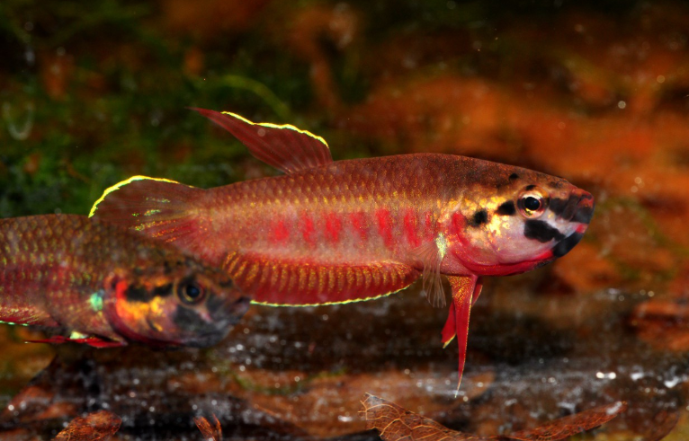
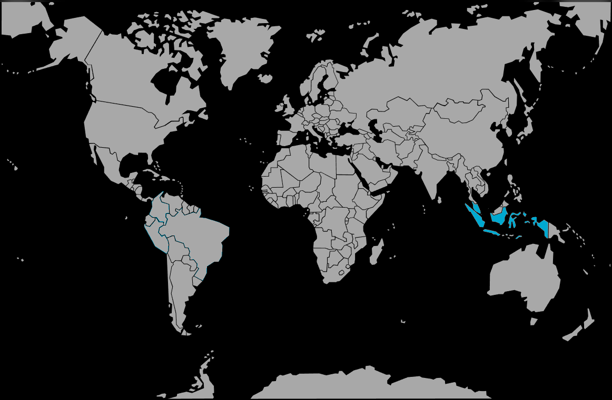

Systématique
- Ordre : Anabantiformes
- Famille : Osphronemidae
- Genre : Betta
- Espèce : B. rubra
- Auteur : Perugia, 1893

Betta rubra, le combattant rouge ou betta Toba, est l'une des plus petites espèces du genre Betta et une espèce extrêmement rare et précieuse en aquariophilie moderne, endémique des tourbières de Sumatra du nord-ouest.
Le mâle atteint 2,8 à 3,5 cm de longueur standard, tandis que la femelle mesure environ 3 à 4 cm. Le corps est excessivement petit et fusiforme. La coloration de base diffère marquablement entre les sexes : le mâle arbore une splendide robe rouge-cerise à rose cuivré intense, particulièrement visible lors de la reproduction, tandis que la femelle demeure gris-brun terne et discrète. Les nageoires du mâle sont ornées de taches iridescentes bleu-vert à crème, les nageoires dorsale, anale et caudale étant marginées de rouge ou orange. Les opercules et la région post-orbitale présentent un reflet doré-bleu caractéristique. La femelle affiche une nageoire caudale arrondie, moins colorée, avec parfois un léger reflet bleu-vert.
Cette espèce appartient au groupe Rubra, distinct et basique, avec un mode reproducteur ancien : incubation buccale paternelle. L'épithète spécifique « rubra » (rouge) fait directement référence à la magnifique coloration du mâle.
Betta rubra est une espèce très timide et recluse, drastiquement moins agressive que Betta splendens. Les mâles tolèrent la présence les uns des autres, particulièrement en aquarium spacieux densément planté, où chacun établit son propre territorialité discrète. L'espèce peut être maintenue en petit groupe (harems) mais affiche une préférence pour la tranquillité absolue. Elle se cache la majorité du temps sous les feuilles mortes, branches et végétation dense, émergeant brièvement pour respirer à la surface via son labyrinthe.
L'espèce est très sensible au stress et demande une eau extrêmement acide, peu minéralisée et riche en tannins. Elle se reproduit naturellement dans les plantes flottantes et la surface submergée peu profonde. Elle possède un labyrinthe primitif bien développé, lui permettant de respirer l'air atmosphérique et de survivre temporairement dans des eaux désoxygénées, trait primordial dans ses habitats marécageux stagnants. Elle peut sauter hors de l'eau et le bac doit être couvert. La cohabitation avec d'autres espèces est délicate; seules des espèces très calmes et paisibles (petites crevettes, escargots) sont tolérables.
Mode : ovipare incubateur buccal paternel; reproduction très primitive, semblable à celle de Betta picta.
Après une parade nuptiale prolongée, les deux parents se courtisent intensivement durant plusieurs heures. L'accouplement débute lorsque la femelle affiche des barres verticales de réceptivité. Le mâle s'enroule progressivement autour du corps de la femelle, tous deux vibrant en synchrone. Les œufs sont émis lentement par la femelle; le mâle les recueille immédiatement en bouche et les retient. Ce processus d'enlacement et d'émission d'œufs peut durer plusieurs heures, les deux parents effectuant plusieurs passages au-devant du nid/substrat.
Après le frai, le mâle entre en phase d'incubation buccale, les œufs sont retenus en permanence dans sa bouche pendant environ 14 à 21 jours. Durant ce laps de temps, le mâle jeûne quasi-complètement, ses nageoires dépérissent et son état de santé se détériore visiblement. À l'éclosion (après 36–48 heures), les alevins demeurent aussi en bouche du père, qui produit des mouvements de branchies spéciaux les maintenaient en eau oxygénée. Après libération (14–21 jours post-fertilisation), les jeunes demeurent 3–5 jours en développement libre avant la nage autonome. Les parents ne prédatent généralement pas les jeunes et les couples peuvent se reproduire en succession rapide en harem.
Dimorphisme sexuel : extrêmement marqué et distinctif. Le mâle est franchement plus coloré que la femelle, arborant la splendide robe rouge-cerise intense, tandis que la femelle demeure gris-brun terne. Le mâle affiche les nageoires ornées de taches iridescentes bleu-vert, absentes chez la femelle. À maturité, la papille génitale blanche de la femelle devient visible. Lors de la parade, la femelle se pare de barres verticales transversales foncées.
Espérance de vie : données limitées en captivité, probablement 3 à 5 ans en conditions très strictes et optimales. L'extrême fragilité de l'espèce en captivité réduit généralement la longévité effective.
Betta rubra fréquente les tourbières stagnantes, fossés, petits étangs et zones marécageuses hypoxiques du nord-ouest de Sumatra (Aceh, Sibolga). L'habitat naturel affiche une eau extrêmement acide (pH 5,0–5,5 typiquement), très peu minéralisée (GH inférieur à 2 dGH), enrichie en tannins créant une coloration brun foncé ("blackwater"). Le substrat est composé de tourbe, litière de feuilles mortes, racines et branches immergées. La végétation est dense : Cryptocoryne, plantes flottantes, hyacinthes d'eau créant une couverture ombragée quasi-complète.
L'oxygénation est extrêmement réduite, particulièrement en périodes sèches lorsque les habitats se fragmente en petits trous d'eau isolés. L'espèce survit à ces conditions hypoxiques grâce à son labyrinthe primitif lui permettant de respirer l'air atmosphérique. La température naturelle avoisine 23–26°C. La densité de population est ultra-faible, l'espèce occupant territorialité très restreinte.
Répartition

Origine naturelle :
- Indonésie : nord-ouest de Sumatra, région côtière Atlantique.
- Localités principales : tourbières de Singkil à Sibolga (Aceh et Nord-Sumatra, Sumatera Utara).
- Répartition très fragmentée, hautement endémique et menacée; localité type historique Lago Toba (probablement erronée; cette espèce n'y fréquente pas).
- Hybridation naturelle possible avec B. dennisyongi signalée.
Espèce extrêmement menacée : destruction massive des tourbières pour plantation d'huile de palme, drainage des zones humides, pollution agricole. Les habitats naturels connus ont été presque entièrement détruits depuis 2009.
Paramètres de maintenance
Température : 22 à 26 °C, idéalement 23–25 °C; l'espèce dépérit au-delà de 27°C.
pH : 5,0 à 7,0, fortement acide à neutre; pH 5,5–6,5 optimal; l'espèce ne tolère pas l'eau alcaline.
GH : 1 à 4 °dGH maximum, eau extrêmement douce; l'ajustement à la baisse des minéraux est essentiel.
Courant : nul à très faible; eaux stagnantes obligatoires.
Volume conseillé : minimum 30–40 L pour un couple ou petit harem (1M : 2–3F); 50–60 L recommandé. Très planté, lumière tamisée par plantes flottantes, substrat de tourbe ou feuilles mortes, nombreux refuges.
Régime alimentaire
Régime : carnivore insectivore strict; proies vivantes largement préférées.
En aquarium, accepte paillettes avec extrême difficulté (digestibilité faible), nourriture congelée (daphnies, vers de vase, larves de moustiques). Proies vivantes essentielles : micro-vers, petites daphnies, micro-crustacés. L'espèce a tendance à la gourmandise et demande peu de nourriture (faible appétit comparé à B. splendens).
Distribution 1 seule fois par jour en très petites quantités. Jeûne occasionnel (1 jour par semaine) est extrêmement bénéfique. Alimentation variée optimise la santé fragile et les performances reproductives.